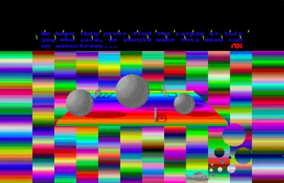

Chapter 4
Breaking the Limits in 1988
After 1987, other demo-groups started to form and release their demos. Many came from the cracker scene, pirating games, and now creating demos. The Exceptions started to attract the attention of computer magazines, exposing them to a greater readership. They published a series in a commercial print magazine, and they worked on their first commercial computer game. Even though it looked like they were leaving the demoscene, they wanted to go out with a bang. And what a bang it was'; one might even refer to it as a B.I.G. bang!
4.1 B.I.G. Demo
The B.I.G. Demo called itself the "Best In Galaxy" demo and represented the culmination of The Exceptions' work up to this point. It included more than 100 tunes converted from the Commodore 64, displayed an increased number of colors, and the lower screen border removed.
Udo Fischer (-ME-), Erik Simon (ES), and Jochen Hippel (Mad Max) were now joined by Michael Raasch (Daryl) and Gunter Bitz (6719) to create the first megademo by a single demo-group.[50] The whole B.I.G. demo ran on a 512KB machine and was stored on one single-sided disk, which had a capacity of 360KB.
It featured 113 music tunes, three so-called "Psych-O-Screens" with the latest effects and a screen with the longest text scroller ever packed into a demo so far. In addition, when you pressed the reset button on the computer, you would get a hidden custom reset screen.
4.1.1 Main Screen
The main screen showed a selection of all the 113 music tunes converted at an even higher fidelity from games on the Commodore 64 than in the Little Sound Demo and the Little Color Demo.
Users navigated the song list using the cursor keys. By hitting "1," "2," or "3," they changed to the Psych-O-Screens and "B" would open the B.I.G.-Scroller.
Figure 36: The main screen of the B.I.G.-Demo (screenshot)
If you listened to all the music, it would take more than four hours, with tunes that range from happy to melancholic, from pop to rock. Some of the 113 games on the Commodore 64 are Sanxion, Lightforce, Master of Magic, Monty On The Run, Crazy Comets, Thing On A Spring, and Auf Wiedersehen Monty (see figure 36).
The scrolling text occupied the bottom part of the screen in the lower border. Erik Simon (ES) used a similarly shaped font to the Super-Neo-Demo-Show, except that in the B.I.G.-Demo, it was much more colorful. It looked like it was embossed in the gray background with multicolored highlights running diagonally across each letter.
As can be seen in the screenshot above, a horizontal tubular gradient bar starts within the left border, crosses the main display area, and extends into the right border. At the bottom of the screen, the shadow covers part of the scrolling text. Both the shadow and the bar were achieved by changing the palette registers of the border color, making it look like the main contents extend across the left and right. Beneath the scroller, even further into the lower border, the top half of the logo of TEX protrudes into the screen.
The first and main screen of the B.I.G.-Demo is gray with some multicolored highlights. While not exactly the most exciting screen, it is well balanced compared to the previous two demos. It provides instructions to change the music and to switch to the impressive parts of the demo: the insanely technicolored Psycho-O-Screens.
4.1.2 Psych-O-Screen 1: The Escher-Perspective of a Rainbow-Pierced Cube
Color changes, color movement, colors spanning across the screen and into the left and right border; the first Psych-O-Screen plays with color cycling and false perspective effects. At the same time, the music from the main screen continues playing relentlessly.
Figure 37: The first Psych-O-Screen's animated bar of rainbow colors moving up
and down the screen with the frame changing colors (screenshots)
In the center of the screen, a gray cube with The Exceptions' logo floats in a sea of static (see figure 37). A bar of rainbow colors as wide as the full screen with borders moves up and down. When the bar reaches the cube, it stretches behind the logo, but in front of the front-facing surface of the cube. At the same time, the bar protrudes behind the cube's sides, something that, according to all laws of perspective, should in fact be displayed behind the bar. This Esherian contraption is emphasized by the patterned frame of colors of a single tone that encase it, though the multicolor bar pierces it. All the while the colors of the frame pulsate in different colors fading in and out of multiple palettes of related shades (see figures 38 and 39).
Beneath the frame in the area of the screen's lower border, The Exceptions repeat their trick with graphics in the overscan area by painting in dozens of bright and contrasting colors the words "Colorright by," then a gray tubular representation of their TEX logo.
Figure 38: Detailed screenshot of the first Psych-O-Screen (screenshot)
Figure 39: Warped Perspective in The Cycle by M.C. Escher
4.1.3 Psych-O-Screen 2: The Surreal Landscape in Technicolor Space
This screen shows a platform of a hundred colors floating in the blackness of space. On it, different-sized gray spheres cast shadows. Rectangular structures lie between the spheres; in the negative space of the shadows the rectangles cast, you can see the initials ES for the artist Erik Simon, the word TEX for The Exceptions, and the two connected musical notes for the music from the home screen that continues to play.
Figure 40: The multicolored platform with surreal shapes floating in an emptiness gradually filled with vibrant but interrupted scanlines
The surreal "Daliism" of this floating island does not remain alone for long. Starting from the left, multicolored scanlines start to fill the black background with vivid radiance until the whole width of the screen is covered (see figure 40). Beneath it all, a gray fish inexplicably hovers in the Atari ST's lower border.
Only now, as the screen is full of interrupted scanlines of vibrance, can we see a handful of spherical silhouettes right next to the fish. Perhaps these are technicolor bubbles leaving the fish's mouth (see figure 41).

Figure 41: Detailed screenshot of the second Psych-O-Screen (screenshot)
On the second Psych-O-Screen, The Exceptions outdo themselves in the multitude of colors on the screen at the same time; a number close to the full available spectrum of the Atari ST's 512 colors. Surreal shapes in color space are the theme of this image, therefore it makes perfect sense that The Exceptions whimsically post the following text above their epic sea of luminance:
"We hope they never find the corpse of this guy who said, we should make this demo run on monochrome…"
4.1.4 Psych-O-Screen 3: The Moiré Fringe of Color Interference
If one could call the previous Psych-O-Screen merely colorful, then this third screen explodes with surreal colors like a digital Jackson Pollock on LSD. The Exceptions push the color limits and use as much of the borders as possible. Despite what the other screens showed, they had not yet managed to draw actual graphics into the side borders. Thus far, they could only produce straight horizontal lines in the left and right overscan area. These techniques fill the whole Psych-O-Screen (see figure 42).
Figure 42: The third Psych-O-Screen of the B.I.G. Demo (screenshot)
They created a Psych-O-Screen with hundreds of interleaved lines of colors horizontally stacked onto the screen. These lines extended into all the borders, except for the top border. This was the closest to full overscan that the Atari ST had achieved so far.
Figure 43: Vincent Pomilio's 141 Horizon Lines, 2018, acrylic,
pigmented plaster and wax on canvas
(Source:
http://www.vincentpomilio.com
)
4.1.5 Reset Screen
For the final trick, The Exceptions also included a reset screen. When the user pressed the reset button on their Atari ST, the computer did not reboot as it should by default. Showing a bomb on the screen was the standard way the Atari ST's operating system to report a system crash, an error, or an exception. But in this case, the bomb started to multiply and turn into a cartoon version of the system icon. The Exceptions had caught the reset command and created a mock screen with cartoon versions of the bomb.

Figure 44: The Reset screen in the B.I.G. Demo (screenshots)
4.1.6 B.I.G.-Scroller
The scrolling text from the home screen can also be read in the BIG-Scroller, a separate screen of multicolored text scrolling through a dark cave with stalactites in front of it and stalagmites in the background.
Figure 45: The B.I.G.-Scroller (screenshots)
The "Best in Galaxy" demo had the longest scrolling text ever produced in a demo up to that point (see figure 45). To this day, it still counts among the longest texts to ever be included in a demo on a 16-bit machine.[51] The text was distributed between the main screen and the "B.I.G. Scroller" screen and contains around 41,000 characters; these are more than 7,000 words at 42KB. Could it be that these 42KB were used deliberately because according to Douglas Adams in "The Hitch-Hiker's Guide to the Galaxy", the number 42 is the answer to the ultimate question of life, the universe, and everything?[52]
Here is the first paragraph of the B.I.G Demo in all its glory, changed to mixed-case characters for readability.
"TEX is back to strike again!! It has been a long time without demos, but this time we have succeeded in making the biggest demo in the universe: the Best In Galaxy (B.I.G.) Demo, offering 113 pieces of music with a total playing time of 243'39' (approximately 4.1 hours)!!! The whole thing is surrounded by stunning graphics, transparent scrolling in the lower border, 512 color Psych-O-Screens, the smoothest big scroller you ever saw and a whole bunch of rasters - quite an achievement, wouldn't you say?"
4.1.7 A Reading of the Scrolling Text
In this section, the focus will be on the examination of the scrolling text. It is the longest scrolling text in any of their demos up to this point, and therefore provides insights into the self-proclaimed intentions and thinking of the demo-makers. From the onset, it should be established that the majority of the text was not produced by the core members of the Exceptions, but rather by Richard Karsmakers (Cronos from the Amazing Cracking Conspiracy)[53], the editor of the diskmag ST-NEWS who helped the demo-makers start on this demo effort and distributed and advertised the demo once it was completed. That being said, the demo itself is the work of The Exceptions. They would not allow the text to contain anything that contradicts their intentions and thinking. The scrolling is summarized below.
After the introduction, with a description of the contents and features of the demo, the writer states the playtime of all the music combined and the length of the scrolling text. Then, the writer praises the contributors of the music, the code, the graphics, and himself before decrying the Atari ST's YM-2149 sound chip and graphics hardware. The next section is a list of credits for the demo's contributors. This is followed by a list of the records broken by the demo, which include the number of pieces of music, their total length, the length of the scrolling message, and the admirable achievement of compressing it all to a single-sided floppy disk.
The longest section is the greetings to other members of the scene. They range from members of the Atari ST demoscene, demo-makers on other systems, developers of commercial software on the ST, as well as people at the Atari Corporation who helped develop the machine. The language tropes used are playful insults, boasts, and other competitive linguistic forms to create sociality in the burgeoning demoscene on the Atari ST. Some of the greetings have playful remarks, such as "Amiga Software Syndicate (though they are working on the wrong machine)." While not explicitly stated, there are only men on the list.
Three of the "greetings" were disrespectful messages directed at groups whom The Exceptions despised for acting dishonorably: the cracking groups HSS that distributed programs that were not copy-protected by their publishers (but HSS credited themselves as having cracked the copy protection). the cracker group named Klu Klux Clan Conspiracy in bad taste, and Strike Force. Both wrongfully credited themselves with the cracks done by others:
"HSS (the biggest cocksucker around, that always puts his name in programs that others cracked, writes 'cracked by' in loading pictures of non-protected software, and that has to watch his steps before someone will punch his bleedin' nose)
Klu Klux Clan Conspiracy (another one of those queers, writing his name in some DMA crackings)
Strike Force (a bunch a half-ass fags that put smart-ass intros in front of programs they didn't even crack - using routines they pinched from others)."
Richard Karsmakers and The Exceptions use strong language in this section. It is not only offensive, but also sexually violent and homophobic and departs in tone from the other sections. This strong language was deliberately chosen to attack the cracker groups. These paragraphs provide an insight into the unspoken "codex" of the scene, where claiming merits is the primary currency. Wrongfully claiming credit is regarded as a violation of this codex. The Exceptions express their anger and dissatisfaction with these groups who acted dishonorably.
The writers are not native English-speakers. Derogatory vernacular in the 1980s was pejoratively directed at sexuality as offensive slurs. From a modern perspective, this is not acceptable and does not conform to our present-day cultural norms nor political correctness. In the context of the times and hyper-masculine action movies of the 1980s as watched by this generation of young men, the choice of words is offensive, but not unusual.
In the next section, there is an interesting duality. Richard Karsmakers' demoscene handle is Cronos, he is part of the Amazing Cracking Conspiracy (ACC), and he works on ST-NEWS under his real name, yet in this text, he uses his scene handle. To create distance between his civilian identity and his scene identity, he praises the work of ST-NEWS as though he is not a contributor:
"Amazing Cracking Conspiracy ('ST NEWS' is a great magazine! read more about it further in this scrolling message. Give our love to Willeke!)"
There is a mildly profane message to the "motherfucker that brought the virus on the ST." Karsmakers elaborates that "words fail to tell what we think of him, but I can assure you it ain't much good." This was the age when viruses were distributed through infected floppy disks, and in some cases, as infected files in a Bulletin Board System (BBS). Getting a virus into circulation in this way was a very deliberate act. Karsmakers closes with a humorous death curse to the virus maker ("...may thunder and lightning split your dim-witted skulls into a thousand tiny fragments…").
The next section lists metrics related to the creation of the demo, e.g., the number of developer hours that went into the development (2,019 hours), the number of bottles of soft drinks, beer, and wine, as well as the cups of tea and coffee that they drank during this time. The metrics go on to list materials used like diskettes, adhesive strips, paper, and other materials. They list all the computers they used. Oddly enough, this includes not only the Atari and Commodore 64, but also a Commodore Amiga and an Apple Macintosh II (which at the time was prohibitively expensive). They praise the applications they used, which includes another praise for the pixel-paint application NEOchrome.
There is a tidbit alluding to the demo-makers having to neglect their schoolwork due to working on their demo:
"82 hours spent cleaning the schoolyard (due to arriving too late at school or not properly attending the lessons while developing a piece of the demo on chemistry notepaper)."
A long section is dedicated to game musician Rob Hubbard:
"To fill this scrolling text with more or less useful things, I think it is more than appropriate to write something about the man to whom this demo program is dedicated: Rob Hubbard (music programmer on various computer systems amongst which are Commodore 64, Commodore Amiga and Atari ST)."
Below, Karsmakers describes the games that feature Hubbard's music and how Jochen Hippel (Mad Max) converted the tunes to the ST. Under his pseudonym, Karsmakers advertises his own diskmag ST-NEWS:
"Through TEX, I was told to give some attention to 'ST NEWS', an international disk magazine that is written in English and published through Richard of the ACC as a public domain offering."
Again, Richard Karsmakers (Cronos) references himself as a different person.
The writer is still trying to make the text longer, so he starts a joke section where he quotes the first joke ever in a scrolling message on the Commodore 64 ("Biggles" by FBG): "What does an elephant use as a tampon? [...] it's a sheep!" An unfunny and mildly offensive joke.
What follows is the "obligatory" Amiga vs. ST section. The competition between platforms has been a motivating factor for the demo-makers on the ST since the very beginning:
"Now, many Atari ST users start throwing up when they hear someone mentioning the Amiga, and nearly all Amiga users truly think the Atari ST is a heap of shit (and the worst thing is that they really think it is a heap of shit, whereas Atari ST users just talk negatively about the Amiga for jealousy reasons). That jealousy, by the way, grows less and less by the day because demo programs like this start appearing on the ST, together with more and more excellent games and other programs."
This section evokes the inherent technological tribalism of the demoscene. It specifically addresses the envy that owners of the Atari ST feel toward the Amiga's superior capabilities. The text states that Amiga owners look down on the ST for being the inferior machine. Certainly, some Amiga owners and demo-makers held the Atari ST and, by extension, its owners in contempt, but this was not as widespread an opinion in the Amiga demoscene. Many ST demos poked at the Amiga, yet very few Amiga demos attacked the ST.
The next section was a useful set of instructions on how to wire the ST's monitor port to an amplifier for stereo sound. This was followed very late in the scrolling text by the instructions on how to use the B.I.G. Demo, how to access the different Psych-O-Screens, and how to change the music. To be fair, the abbreviated instructions are also listed on the main screen.
The writers then describe the distribution model of the demo. This is generally how most demos on most computer systems were distributed: freely and as part of the "public domain" software scene. This is not the same legal term for intellectual property that is no longer copyrighted, but a by-now-extinct model of software distribution where public domain software libraries would distribute software that had explicitly been made available by its creators. Usually, the only costs that could be charged were for the disk and the effort to make the copy, therefore they remained affordable.
It is striking that The Exceptions urge for the free and wide distribution of their demo in this section. They also ask for donations. This is in 1988, nearly a decade before the prevalence of the free and open-source software movement.
"Since this demo program is public domain (shareware), it may be copied freely. Please copy it to everyone who wants it, as well as those who do not particularly want it (they might be grateful when they find out what they have copied when they start examining it more closely). If you think this demo program might be worth a small donation (please, don't take the word 'small' literally!), you can send any amount of money..."
It takes several hours for the full text to scroll by. If you read it on the screen while it scrolls, you would have a good amount of ghosting in your eyes by the end. Even after averting your sight from the screen, you would still see words scrolling by.[54]
If you sat through the full text, right at the very end, you learned the demo-maker Alyssa's secret technique to remove the lower border:
"Ok. In just a few seconds, -ME- from the Exceptions will start explaining how border scrolling techniques work. If you have not yet fetched your notepad and pencil, please prepare yourself for a mind-boggling piece of constant memory....
Here it is...."
[...]
"...if you remember our super-neo-demo-show you might have noticed a mistake in the pictures in the bottommost line (at the right border, 16 pixels are missing.....). These are effects of switching off the border. Attention!!! I'm now explaining the principles of switching off the border:
In the middle of the last line of the normal screen (no. 199 counted from 0) you must change the syncronization frequency from 50Hz to 60Hz. This will cause the Shifter to start the right border 16 pixles earlier than usual. Then wait till the electron beam is in the left border of the next line. There you must switch back from 60Hz to 50Hz and there will be no lower border again. The greatest problem is the exact timing of the synchronization switching!! Your rout will be disturbed by keyboard and timer C interrupts. If you don't succeed in timing the program exactly there might be 2 different effects: In the easier case you'll see the border again for a moment, in the other case you'll see curious things happen on your screen (flickering bitplanes and so on). An other result of switching off the border is a confused video Shifter which is starting the right border 16 pixles too soon as he doesn't want to show the last 2 bytes of the video memory. Therefore the first address displaid in the first line of the 'border' is 31998 bytes behind the first address of the screen !! So you must move your graphix 2 bytes to the left for not getting 'funny' pictures!
Puh !! Writing this text used much less time than making the lousy Psycho-2-Screen for which I needed 48 hours of hard programming and i don't know how long ES needed to paint the graphix with NEOchrome, the best painting program on the ST!!! That's about it, folks! The 99th percent of this scrolling message has just ticked away and we're unmistakably nearing the 100th (and final) percent now.... In a few seconds, the scrolling message will start anew.... Au revoir auf wiedersehen tot ziens arrividerci tschuess good bye houdoe doeg see you later, alligator .....Anyway, we hope to see you again in the next TEX demo (if one should be made sometimes).
Bye!"
4.1.8 Digital Sound Samples
When you scroll to the very bottom of the music list on the main screen of the B.I.G.-Demo, there is a special entry called "The Digital Department." Selecting it changes the view, and suddenly the Atari ST's speakers produce digital samples of near-professional quality with adaptations of even more games. The music was close to the capabilities of the Amiga.
Here, The Exceptions announced another demo called the Amiga-Sound-Demo.
After they had adapted nearly all of Rob Hubbard's Commodore 64 game music, it was now time to start adapting Hubbard's Commodore Amiga music. And who else would be capable of such a feat if not The Exceptions?
4.1.9 The Elements of Design and the Aesthetics of Pixels of the B.I.G. Demo
The images produced for the B.I.G.-Demo looked like they belonged in a computer or video game, but they were not created for that. They were created to stand on their own, to be beheld in their own space, all the while in the context of other images produced on computers. They were images composed of clearly visible and sometimes even distracting building blocks: pixels.
In the low-resolution images of the time composed of pixels, the pixels themselves did not simply represent a part of the image that, together with the other pixels, forms a greater whole: but the image as a complete artifact. Pixels were too big, too stark, too noticeable for that. Pixels also existed as independent entities known as "digital brush strokes," as clearly visible building blocks of the entire image. This gives each pixel a life of its own, an unapologetic presence, a value in and of itself, in addition to the part of the whole picture that it represents.
This made the pixelated images of this era stand apart from paintings, photography, and film frames. Today's displays with a greater resolution than the eye can discern can take the shape of anything we throw at them. They can "pretend" to show photos or reproductions of paintings or videos. The pixelated images of the Atari ST and similar computers could not pretend to be anything else than what they were. In this way, they truly embrace their form.
4.1.10 The Making of the B.I.G.-Demo
Richard Karsmakers (Cronos), the editor of the diskmag ST-NEWS, helped initiate the B.I.G.-Demo and wrote most of the record-breaking scrolling text. He had approached The Exceptions to motivate them to create the biggest and best demo so far. Five months later, they released it on January 24, 1988.
Jochen Hippel managed to get the raw data of the original music from the Commodore 64 to the Atari ST using a data cable and a conversion program supplied by Udo Fischer and Erik Simon. However, this does not mean that the music was in any way playable or sounded good on the Atari ST. The further manual conversion work was time-consuming and required many adaptations to the Atari ST's inferior sound chip.
The programming of the many Psych-O-Screens required exact timing and expert knowledge of the hardware. Together with the music, graphics, and digi-sound sample, all the data needed to be compressed to a single-sided 3.5" floppy disk so that The Exceptions could allow the demo to run on the largest possible range of Ataris.
Richard Karsmakers continued collaborating with members of The Exceptions, who contributed articles, graphics, and music to ST-NEWS. Karsmakers also wrote a first-hand account of how they finished their next demo, called the Amiga Demo.
4.2 Amiga Demo
The Amiga Demo directly targeted the superior sound capabilities of the Commodore Amiga by converting tunes that were regarded as impossible on the Atari ST's limited sound hardware. As if to conquer the last territory of the ST's inferiority compared to the Amiga, The Exceptions released the Amiga Demo as their last full demo.
In the Little Sound Demo and Little Color Demo, The Exceptions matched the sound generation capabilities of the Commodore 64's SID chip. Now, they conjured the same sound quality as the mighty Paula chip in the Commodore Amiga from the Atari ST's YM-chip. Paula could produce four channels of [55] sample-based digital sound. Technically, it was ahead of anything at the time, only to be matched on the IBM PC compatible with the introduction of the expensive Sound Blaster sound card and arguably, by the sound capabilities of the Sega MegaDrive/Genesis when it was released in 1988.
Figure 46: The music demo screen of the Amiga Demo (screenshot)
The Amiga Demo consisted of two screens. The first screen is an imitation of a music program on the Commodore Amiga called Aegis Sonix, which was a piece of software not written for the Atari ST (see figure 46). It takes advantage of the Amiga's sound capabilities and provides users with an environment to compose music using notation. The Exceptions did not port the actual program onto the ST; rather, they created a copy of the file selection screen and a part of the notational screen in the background.
They ported seven pieces of music from Amiga games, like Rally Master, Amegas, and Crashin' Robb, for a total of fifteen minutes of high-quality, four-voice musical tunes, even though the Atari ST is only capable of playing three-voice music. Users can switch music by choosing a tune with the cursor keys.
This digisound was impressive enough, given the ST's sound and music limitations, but the most impressive screen is accessed by pressing the "O" key (O for overscan). This opens up the overscan screen with no lower border and, for the first time on the Atari ST, no right border. Removing the right border and using the space for graphics was considered impossible. The Exceptions had done it.
They filled the screen with a pulsating pattern reminiscent of Yayoi Kusama's colorful polka dot art (see figures 47 and 48). Along the lower half of the screen, a transparent text scrolled. The blue fractal patterns shine through the red text.
Figure 47: The scrolling text screen with no right border in the Amiga Demo (screenshot)
Figure 48: The borderless screen of the Amiga Demo is aesthetically reminiscent of the works of Yayoi Kusama at the Moco Museum
4.2.1 The Making of the Amiga Demo
The Exceptions not only broke two new limits of the Atari ST by opening the right border and playing Amiga-quality digimusic, but they also managed to break a personal record for the longest continuous time spent programming without interruption.
While the demo-makers were visiting their friend and ST-NEWS editor Richard Karsmakers, they wrote the whole demo in one continuous hackathon. Karsmakers chronicled the creation of the Amiga Demo in ST-NEWS.[56] They worked on the demo for 22 hours straight, fighting against the hardware, using tricks to overcome limitations, and all the while eating pizza and drinking soft drinks until most everyone fell asleep. Udo Fischer (-ME-) was left to wrap up the programming. Karsmakers contributed the contents of the scrolling text, Jochen Hippel (Mad Max) managed to faithfully convert the Amiga music to the ST's hardware, and Erik Simon (ES) created the graphics and the transparent font they needed for the demo.
Figure 49: The Exceptions in the Netherlands when they wrote the Amiga Demo
Left to right: Antiware, Daryl, Es, Mad Max, Robert Heessels
(co-owner of STRIKE-a-LIGHT), Cronos, 6719 and half of -ME-.
(Source:
ST-NEWS
https://st-news.com/gallery/tex-in-holland/the-group-inside/
)
4.3 Mainstream Exposure
In 1988, Tarik Ahmia, the editor-in-chief of the established mainstream computer magazine ST-Magazin 68000er published by Markt & Technik in Bavaria, reached out to Udo Fischer, Erik Simon, Michael Raasch, and Gunter Bitz. The Exceptions had become minor celebrities in the Atari ST demoscene, but they were not widely known to the average computer-using audience. Tarik Ahmia convinced them to write a series of articles about their programming tricks. In five articles in 1988, The Exceptions revealed all of their programming secrets to a major audience and became widely known outside of the niche of the demoscene.[57] In photos, they were depicted as silhouettes and marketed as secret insiders with only their first names used. This made them seem forbidden and taboo, like true hackers. Undoubtedly, it contributed to their allure.
Their series of articles was called Die Hexer (German for "The Wizards" or "The Witchers").
Figure 50: The Exceptions wrote about their programming tricks in the established mainstream computer magazine ST-Magazin 68000er and reached a wide audience
Under Tarik Ahmia's leadership, the ST-Magazin 68000er not only covered computing news, reviewed games and applications, and provided type-in programs,[58] but it offered several series examining how to produce creative work on the Atari ST. Aside from The Exceptions, the magazine featured series by commercial artists who produced their own magazines using desktop publishing software on the ST, and others creating 3D animations for commercial TV stations in Germany.
In this thesis, the articles in ST Magazin 68000er are used as sources for the technical explanations of the achievements of the demos. An in-depth analysis would exceed the scope here, but they warrant a short examination.
By the late 1980s, computers had become widespread tools in corporate administration. They were used for calculations, transactions, word processing and other business-related tasks. The use of computers as creative tools had been pioneered in the 1960s and 70s, but only started to break into commercial design in the late 1980s. By the time The Exceptions were featured in ST Magazin 68000er, the print industry around news media and publishing was in the process of transforming to digital production. The first Hollywood movies had started to feature computer animations. The tools used in the professional sector like Linotype page setting systems for page layouts in publishing and the Quantel Paintbox for infographics on TV were expensive and specialized. Home computer enthusiasts could identify that even though these systems were far more advanced than their own 16-bit computers, at their core, the expensive machines were not that much different than the higher-end home computers.
By showcasing early hobbyist digital creatives like The Exceptions, computer magazines demonstrated the creative potential of the machines. They provided instructions on how home users could produce their own works and inspire them to produce images, music, animations and even demos. Users could recognize that the expensive professional computers were much more capable, but they could also see that compared to the expensive machines, the gap between the capabilities of their own computers was closing. A Paintbox sold for $100,000 only half a decade earlier could display photorealistic images with 256 colors from a potential color palette of 16 million. Yet the artists used a graphics program on it that resembled the paint applications on the Atari ST, the Apple Macintosh and the Commodore Amiga. On a $1000 Atari ST, with a lot of effort, home users could create their own graphics that came close to the professional graphics; they could see the potential lying dormant in the technology.
By not only reporting about The Exceptions, but by having them write a series of articles, The Exceptions explained how to produce impressive results with the ST. Computer enthusiasts now saw the human beings behind the technology, and that The Exceptions were using the same tools available to home users. Even though it can be assumed that the editors of the magazine revised the articles provided by The Exceptions, there is still an endearing awkwardness in the text. Each article features a different member explaining their skill; for example, explaining how to program smooth scrolling routines, how to produce more colors on the screen, how to paint graphics, and how to write music. The articles are full of enthusiasm and pride at the achievements, yet they are apologetic in their descriptions of the solutions because they emphasize that there might be better ways to achieve the same results. The articles were clearly written by young people who had figured out techniques and wrote about them in a language that resonated with young readers.
By the mid-1980s, only a very few programmers were being promoted by name. They were not yet treated like authors of books or rock stars. This was the time before John Carmack and John Romero, who later became famous for the 3D-shooter Doom, and before Shiguro Miyamoto at Nintendo became famous. In the United States, there were already a small number of famous games developers like Richard Garriott (aka "Lord British") who had created the Ultima-Series of computer-role-playing-games; Roberta Williams who had written King's Quest and many other games at her company Sierra On-Line; and Sid Meier who created Pirates and had his name put on the box. In the UK, the Bitmap Brothers were being promoted by their publisher Mirrorsoft like rock stars, using the full public relations power of Robert Maxwell's media empire.[59]
But they all seemed so far away, none of them were from a small town in Germany. It was a breakthrough for members of the demoscene to be featured in a print magazine.
4.4 Conclusion: The Time of Breakthroughs
This was the year that The Exceptions peaked as demo-makers and produced the most demos. Their demos broke numerous hardware limitations, like the ST's color limits, the bottom and the right screen borders, and the limits of the ST's sound chip with their music conversions from other systems like the C64 and the Amiga. In the B.I.G-Demo, they produced the longest scrolling text to date.
It was also the year that The Exceptions started to collaborate with others in the demoscene. At first with Alyssa whose programming trick for the removal of the bottom border was used in the Super-Neo-Demo-Show. Then, in the B.I.G.-Demo, they collaborated with the diskmag ST-NEWS for advertising and distribution, as well as the diskmag's editor Richard Karsmakers for project management and scrolling text.
1988 was the year that The Exceptions found recognition outside of their small scene by reaching a larger audience in the print publication ST-Magazin 68000er, explaining their programming tricks. But this was also the year that the main members of The Exceptions decided to become legitimate game programmers. They would no longer have time to create full demos, but the move was necessary for them to make a living from their skills.
And by 1988, The Exceptions had already inspired so many others in the Atari ST demoscene that they had passed the torch onto other demo-makers. However, in the next year, The Exceptions would still collaborate with others on their mega-demo: the biggest demo of all.
Footnotes
[50]
Strictly speaking, though, a mega-demo is not only composed of
different sections like the B.I.G.-Demo but each section is also
created by one or more different demo-groups.
» Back [50]
[51]
The length of the scrolling text was exceeded three years later
by the demo “Best Part of Creation” by Delta Force in 1991
https://aldabase.com/2016/01/26/best-part-of-the-creation-by-delta-force/
(Retrieved on June 18, 2020)
» Back [51]
[53]
Adams, Douglas.
The Hitchhiker's Guide to the Galaxy. Random House. New
York, 1979.
» Back [52]
[53]
Despite the name that references cracking, Richard Karsmakers'
group stopped all illegal pirating activities in 1986 and
announced it in ST-NEWS Volume 1, Issue 3 (only
available as an RTF file)
https://st-news.com/uploads/ST-News/Vol-1/ST_NEWS_1_3.rtf
(Retrieved on June 4, 2020)
» Back [53]
[54]
The full scrolling text can be found at demozoo.org:
https://demozoo.org/productions/76594/
(Retrieved on May 30, 2020)
» Back [54]
[55]
Pulse-code Modulation: Digitally samples of analog sound that
sounded like a professional synthesizer with much fewer
limitations than merely wave-generating sound chips like those
in the Atari ST and the Commodore 64.
» Back [55]
[56]
Richard Karsmakers. TEX in Holland.
ST-NEWS Vol. 3 Issue 2.
https://st-news.com/issues/st-news-volume-3-issue-2/features/tex-in-holland/
(Retrieved on June 17, 2020)
» Back [56]
[57]
STCArchiv. Archive of ST-Magazin 68000er.
http://www.stcarchiv.de/stmagazin.php
(Retrieved on May 30, 2020)
» Back [57]
[58]
As was customary in the 1980s, applications were distributed as
actual type-in program listings that users would type into their
machines. In the late 1980s, magazines started to provide
software disks on their covers.
» Back [58]
[59]
Harris, Duncan. Wall, Darren. 2016.
The Bitmap Brothers: Universe. Read Only Memory
» Back [59]